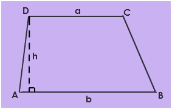

Trapezoid:
A trapezoid is described as a 2-dimensional geometric figure which has four
sides and at least one set of opposite sides are parallel.
The parallel sides are called the bases, while the other sides are called the
legs. There are different types of trapezoids: isosceles trapezoid, right
trapezoid, scalene trapezoid.

A trapezoid with the two non-parallel sides the same length is called an
isosceles trapezoid. A right trapezoid is a trapezoid that has at least two
right angles.
A right isosceles trapezoid is a trapezoid that is simultaneously a right
trapezoid and an isosceles trapezoid. In Euclidean geometry, such trapezoids are
automatically rectangles.
Area of a Trapezoid:
Area of a Trapezoid = A = 1212 ×× h ×× (a + b)
Where:
h = height (Note – This is the perpendicular height, not the length of the
legs.)
a = the short base
b = the long base